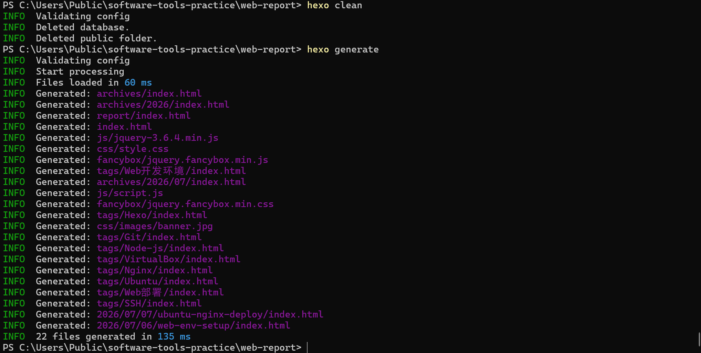
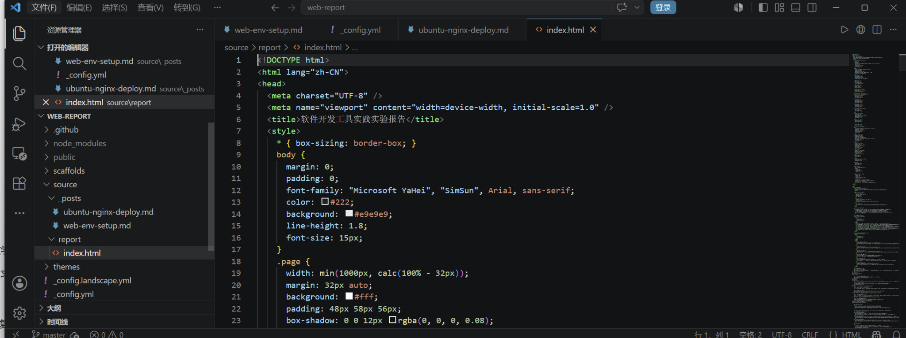
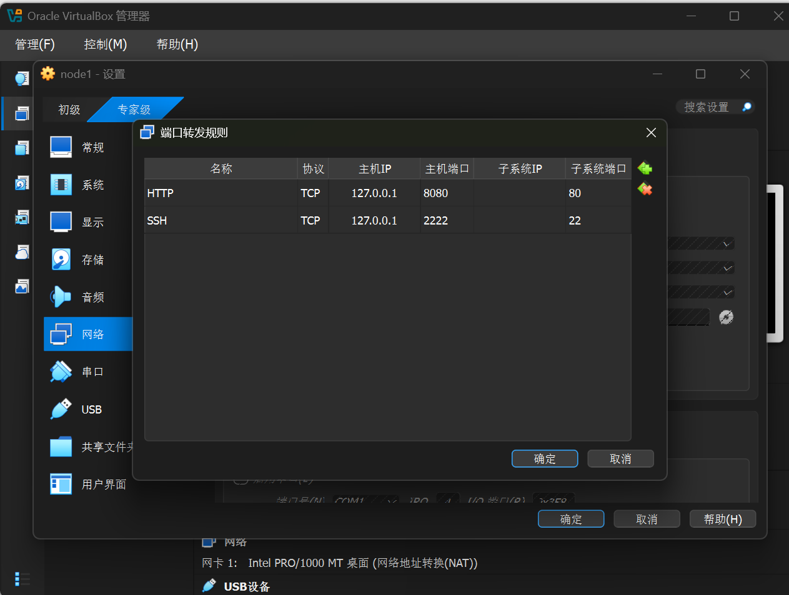
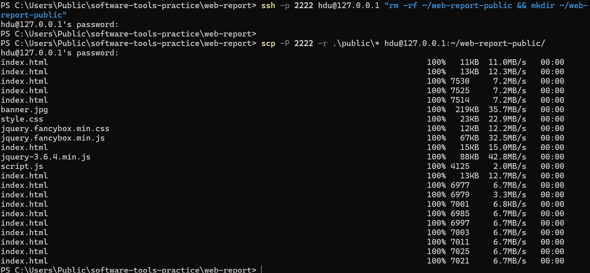
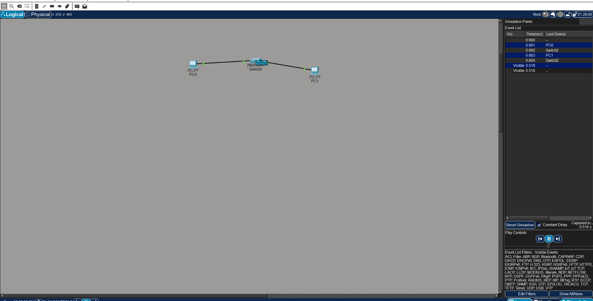
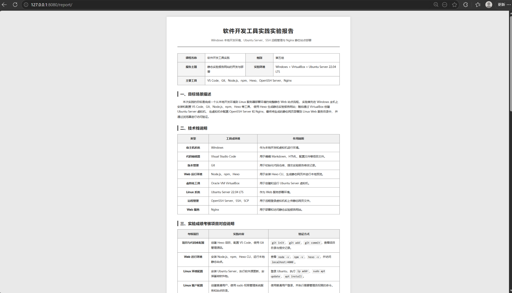

软件开发工具实践实验报告
Windows 本地开发环境、Ubuntu Server、SSH 远程管理、Nginx 静态站点部署与 Packet Tracer 局域网通信
| 课程名称 | 软件开发工具实践 | 组别 | 第五组 |
|---|---|---|---|
| 报告主题 | 静态实验报告网站的开发与部署 | 实验环境 | Windows + VirtualBox + Ubuntu Server 22.04 LTS |
| 主要工具 | VS Code、Git、Node.js、npm、Hexo、OpenSSH Server、Nginx、Cisco Packet Tracer | ||
一、目标场景描述
本次实践的目标是完成一个从本地开发环境到 Linux 服务器部署环境的完整静态 Web 站点流程。 实验首先在 Windows 主机上安装和配置 VS Code、Git、Node.js、npm、Hexo 等工具， 使用 Hexo 生成静态实验报告网站；随后通过 VirtualBox 创建 Ubuntu Server 虚拟机， 在虚拟机中配置 OpenSSH Server 和 Nginx，最终将生成的静态网页部署到 Linux Web 服务目录中， 并通过浏览器进行访问验证。 同时，本报告补充 Packet Tracer 局域网通信实验，用于验证基础网络拓扑、IP 地址配置和 ICMP 数据包传输过程。
二、技术栈说明
| 类型 | 工具或环境 | 作用说明 |
|---|---|---|
| 宿主机系统 | Windows | 作为本地开发和虚拟机运行环境。 |
| 代码编辑器 | Visual Studio Code | 用于编辑 Markdown、HTML、配置文件等项目文件。 |
| 版本管理 | Git | 用于初始化代码仓库、提交实验报告修改记录。 |
| Web 运行环境 | Node.js、npm、Hexo | 用于安装 Hexo CLI、生成静态网页并进行本地预览。 |
| 虚拟化工具 | Oracle VM VirtualBox | 用于创建和运行 Ubuntu Server 虚拟机。 |
| Linux 系统 | Ubuntu Server 22.04 LTS | 作为 Web 服务部署环境。 |
| 远程管理 | OpenSSH Server、SSH、SCP | 用于远程登录虚拟机和上传静态网页文件。 |
| Web 服务 | Nginx | 用于部署和访问静态实验报告网站。 |
| 网络仿真 | Cisco Packet Tracer | 用于搭建简单局域网拓扑并观察 ICMP 通信过程。 |
三、实验成绩考核项目对应说明
| 考核项目 | 实践内容 | 验证方式 |
|---|---|---|
| 项目与代码库配置 | 创建 Hexo 项目，配置 VS Code，使用 Git 管理源码。 | git init、git add、git commit，查看项目目录与提交记录。 |
| Web 运行环境 | 安装 Node.js、npm、Hexo CLI，运行本地静态站点。 | 查看 node -v、npm -v、hexo -v，并访问 localhost:4000。 |
| Linux 环境配置 | 安装 Ubuntu Server，执行软件源更新，安装基础软件包。 | 登录 Ubuntu，执行 ip addr、sudo apt update、apt install。 |
| Linux 账户配置 | 创建普通用户，使用 sudo 权限管理系统服务和站点目录。 | 使用普通用户登录，并执行需要管理员权限的命令。 |
| 远程管理配置 | 启用 OpenSSH，配置 VirtualBox NAT 端口转发，使用 SSH 和 SCP。 | 在 Windows 中执行 ssh -p 2222 hdu@127.0.0.1 和 scp 上传文件。 |
| Web 站点部署 | 将 Hexo 生成的 public 文件部署到 Nginx 目录。 | 浏览器访问 http://127.0.0.1:8080 或 /report/ 查看结果。 |
四、核心操作过程
1. Web 开发环境配置
在 Windows 主机中安装 Git、Node.js 和 npm。安装完成后，通过命令行检查各工具版本，确认 Web 开发环境可用。
2. 静态站点创建与本地预览
使用 Hexo 初始化静态站点项目，并通过本地服务器进行预览。
浏览器访问 http://localhost:4000 后能够看到静态站点页面，说明本地 Web 运行环境配置成功。
3. Git 代码库配置
在项目目录下初始化 Git 仓库，并对实验报告文件进行阶段性提交，保留项目修改记录。
4. Ubuntu Server 虚拟机安装
使用 VirtualBox 创建名为 node1 的 Ubuntu Server 虚拟机。安装过程中选择 Ubuntu Server 22.04 LTS，并勾选安装 OpenSSH Server，以便后续进行远程管理。
5. Linux 环境配置
登录 Ubuntu Server 后，执行软件源更新并安装常用工具和 Nginx 服务。
6. 远程管理与文件上传
通过 VirtualBox NAT 端口转发，将 Windows 主机的 2222 端口映射到虚拟机的 22 端口。随后在 Windows PowerShell 中使用 SSH 登录 Ubuntu，并使用 SCP 上传 Hexo 生成的静态文件。
7. Nginx 静态站点部署
将上传后的静态网页复制到 Nginx 默认站点目录，并重启 Nginx 服务。
五、网络软件基础实验：Packet Tracer 局域网通信
为补充网络软件基础实验内容，在 Windows 主机中安装并运行 Cisco Packet Tracer， 使用该工具完成简单局域网通信仿真。Packet Tracer 能够直观展示终端、交换机和数据包在网络中的运行过程， 适合用于验证基础网络配置是否正确。
本次实验搭建的拓扑结构为 PC0 — Switch — PC1。
其中 PC0 的 IPv4 地址配置为 192.168.1.1，子网掩码为 255.255.255.0；
PC1 的 IPv4 地址配置为 192.168.1.2，子网掩码同样为 255.255.255.0。
两台主机处于同一网段，能够通过交换机完成二层转发和三层通信验证。
在 PC0 中执行 ping 192.168.1.2 后，命令结果显示
Sent=4、Received=4、Lost=0，
表明 PC0 与 PC1 之间通信成功，局域网 IP 地址和交换机连接配置正确。
切换到 Packet Tracer 的 Simulation 模式后，可以观察 ICMP 数据包从 PC0 发出， 经过 Switch 转发到 PC1，随后响应数据包再经由 Switch 返回 PC0。 该过程帮助理解局域网内主机通信、交换机转发以及 ICMP 请求与响应的基本流程。
六、结果验证
最终在 Windows 浏览器中访问 http://127.0.0.1:8080，
能够看到部署在 Ubuntu Server + Nginx 环境中的静态实验报告网站。
这说明本次实践完成了从本地开发、版本管理、虚拟机配置、远程传输到 Web 部署的完整流程。
七、问题记录与解决方法
问题一： 使用 winget 下载 Node.js 时出现网络连接失败。
解决方法： 改用国内镜像下载 Node.js 安装包，完成 Node.js 和 npm 的安装。
问题二： Ubuntu Server 安装完成后，VirtualBox 菜单中的“移除虚拟盘片”按钮为灰色。
解决方法： 强制关闭虚拟机后，在 VirtualBox 的“存储”设置中手动移除 Ubuntu ISO 镜像，再重新启动虚拟机。
问题三： 初次部署后网页内容能够显示，但 CSS 样式没有正常加载。
解决方法： 重新执行 hexo clean 和 hexo generate，完整上传 public 目录中的 HTML、CSS、JS 和图片资源。
八、总结
通过本次实践，我对软件开发工具之间的协作关系有了更加直观的理解。 VS Code 用于编辑项目文件，Git 用于记录项目修改，Node.js 和 Hexo 用于生成静态网页， VirtualBox 和 Ubuntu Server 提供 Linux 实验环境，OpenSSH 和 SCP 实现远程管理与文件传输， Nginx 则负责最终的 Web 站点发布。
本次实验不仅完成了静态实验报告网页的开发，也完成了从 Windows 本地环境到 Linux Web 服务环境的部署闭环。 在后续小组展示中，可以基于该流程继续补充截图、成员报告和答辩说明。
九、技术展望与升级方案
| 方向 | 当前方案 | 升级思路 |
|---|---|---|
| 静态站点生成 | Hexo | 后续可根据文档站点、实验报告或课程网站的维护需求，调研并替换为 Hugo、VitePress 或 VuePress。 |
| 部署流程 | 手动执行 scp 上传文件 |
可升级为 shell 脚本、Git hooks 或 GitHub Actions，减少重复操作并提升部署一致性。 |
| Web 服务 | Nginx | Nginx 可继续作为稳定的静态站点服务，也可以进一步调研 Caddy，比较 HTTPS 自动配置和部署体验。 |
| 运行环境 | VirtualBox NAT + 端口转发 | 后续可升级为桥接网络，或直接部署到云服务器，以便获得更接近真实生产环境的访问方式。 |
十、证据材料清单
| 截图类别 | 主要证明内容 |
|---|---|
| Git / Node.js / npm / Hexo | 证明本地开发工具、版本管理和静态站点生成环境已安装并可用。 |
| VS Code / Markdown 预览 | 证明实验报告源文件能够在编辑器中编写和预览。 |
| VirtualBox / Ubuntu Server | 证明 Linux 虚拟机创建、安装和运行过程完成。 |
| SSH / SCP / Nginx | 证明远程登录、文件上传和 Web 服务部署流程可执行。 |
| Packet Tracer | 证明局域网拓扑搭建、IP 配置、ping 通信和 Simulation 模式观察已完成。 |
| 最终部署访问结果 | 证明浏览器能够访问部署后的静态实验报告页面。 |
十一、关键运行截图






最终访问地址：http://127.0.0.1:8080/report/
部署目录：/var/www/html/
报告形式：静态 HTML 网页